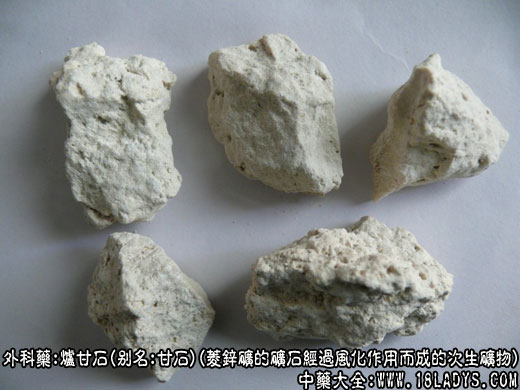

炉甘石为较常用中药。始载《本草纲目》，列入金石部石类。
别名：甘石。
来源：为菱锌矿的矿石，经过风化作用而成的次生矿物。常见于铅锌矿氧化带中。
产地：主产于广西柳州地区。
性状鉴别：呈不规则块状，大小不一。表面白色呈带淡红色，有的微带花纹，有凹陷和小孔眼，显粉性。体轻而质松，易碎。断面淡棕色或灰白色，呈颗粒状，并有细小孔隙，有的形成云头样层纹，有的石性较大坚硬沉重（生甘石）。微有吸湿性，气无，味微涩。
以块大，白色或带淡红色，质轻者为佳。
主要成分：含碳酸锌，并杂有少量铁、钙、镁等。
药理作用：明目去翳，燥湿生肌、止血、止痒。
炮制：煅后水飞，取用极细粉；洗药可生用。
性味：甘、温。
归经：入胃经。
功能：明目退翳，收涩生肌，止血，消肿杀菌。
主治：目赤障翳，眼脸发炎，溃疡不敛，皮肤湿疮，湿疹搔痒。
临床应用：本品只作外用，不作内服。用于眼科结合膜疾患，如结膜炎、结膜溃疡，或翼状胬肉，视物模糊。如炉硝散，该方用治翼状胬肉，据报道有一定疗效。此外也用于溃疡、脓水淋沥或久不收口的慢性溃疡、湿疹，单用或配儿茶末，或配牡蛎末，麻油调敷。
用量：外用适量。
处方举例：
炉硝散（按审视瑶函方加减）：羌活9g，川芎6g，白芷6g，黄芩9g，菊花9g，蔓荆子9g，炉甘石15g，火硝2.4g，冰片0.3g，先将前七种药水提二次，药液蒸干成糊状，又将后三种药研细末加入调匀。用时局部先点1%地卡因，然后涂药糊少许，每日二次。 注：按古今医药文献记载：均为外用，未见内服。但考其性味功能，疗目疾、湿疹、疮疡之功甚著，可否试用于胃溃疡病，是值得研究探讨的。